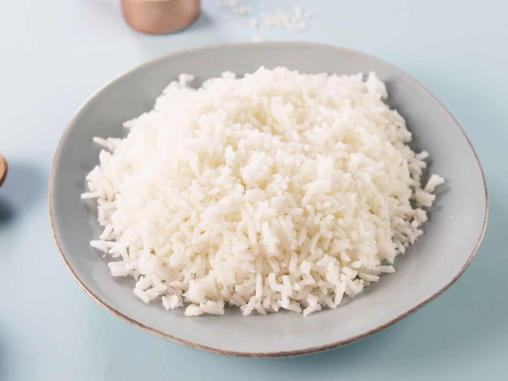

Rice

Description
Rice is a cereal grain that is the most widely consumed staple food for a large part of the world's human population, especially in Asia.
Ingredients
- Rice: Basmati, jasmine, arborio, etc.
- Water: For cooking rice.
- Salt: For seasoning rice.
- Butter/Oil: For cooking rice and adding flavor.
- Vegetables: Carrots, peas, etc.
- Herbs: Cilantro, parsley.
- Spices: Turmeric, cumin, etc.
- Protein: Chicken, shrimp, beef.
Steps
- Rinse rice until water runs clear.
- Combine rice and water in a pot. Add salt.
- Bring to a boil, then reduce heat and simmer covered.
- When done, remove from heat and let sit covered.
- Fluff rice with a fork and serve.